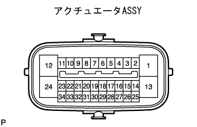
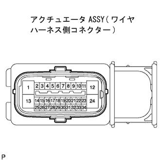

)
)ABS with EBD & TRC & VSC & BA System Terminals of ECU |
 |
)| Terminal No. | Terminal Symbol | Terminal Name |
|---|---|---|
| 1 | GND1 | Body ground |
| 2 | STP | Stop light switch signal input |
| 4 | RL- | Rear LH wheel speed sensor input |
| 5 | RL+ | Rear LH wheel speed sensor power source output |
| 6 | FR- | Front RH wheel speed sensor input |
| 7 | FR+ | Front RH wheel speed sensor power source output |
| 11 | SP1 | Vehicle speed signal output for meter |
| 12 | +BS | Power source for solenoid drive |
| 13 | GND2 | Body ground |
| 14 | CANL | CAN communication input/output |
| 16 | RR- | Rear RH wheel speed sensor input |
| 17 | RR+ | Rear RH wheel speed sensor power source output |
| 18 | FL- | Front LH wheel speed sensor input |
| 19 | FL+ | Front LH wheel speed sensor power source output |
| 21 | BZ | Skid control buzzer output |
| 22 | STP2 | Stop light relay input |
| 24 | +BM | Power source for motor drive |
| 25 | CANH | CAN communication input/output |
| 31 | STPO | Stop light relay output |
| 33 | TS | Sensor test mode activation input |
| 34 | IG1 | IG power source |
Disconnect the connector from the actuator assembly.
 |
Using the SST (Toyota electrical tester), measure the voltage or resistance between each terminal of the wire harness side connector of the actuator assembly and body ground.
| Terminal No. (Symbol) | Terminal Description | Measurement Condition | Specified Condition |
|---|---|---|---|
| 1 (GND1) ←→ Body ground | Body ground | Always | Below 1 Ω |
| 2 (STP) ←→ Body ground | Stop light switch signal input | Stop light switch OFF | 1.5V or less |
| Stop light switch ON | 8 to 14V | ||
| 11 (SP1) ←→ Body ground | Vehicle speed signal output for meter | IG ON | 10 to 14V |
| 12 (+BS) ←→ Body ground | Power source input for solenoid drive | Always | 10 to 14V |
| 13 (GND2) ←→ Body ground | Body ground | Always | Below 1 Ω |
| 24 (+BM) ←→ Body ground | Power source input for motor drive | Always | 10 to 14V |
| 34 (IG1) ←→ Body ground | IG power source input | IG ON | 10 to 14V |